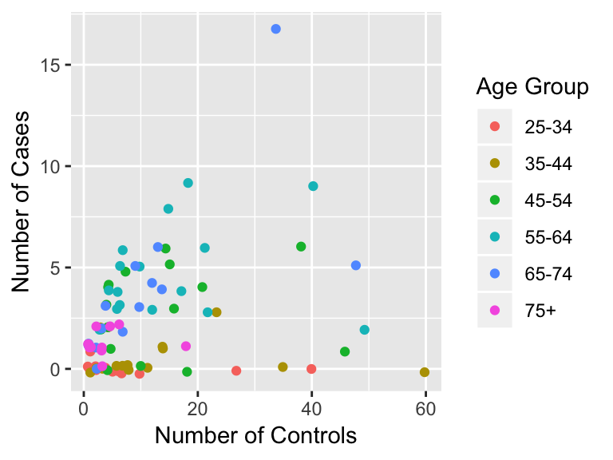
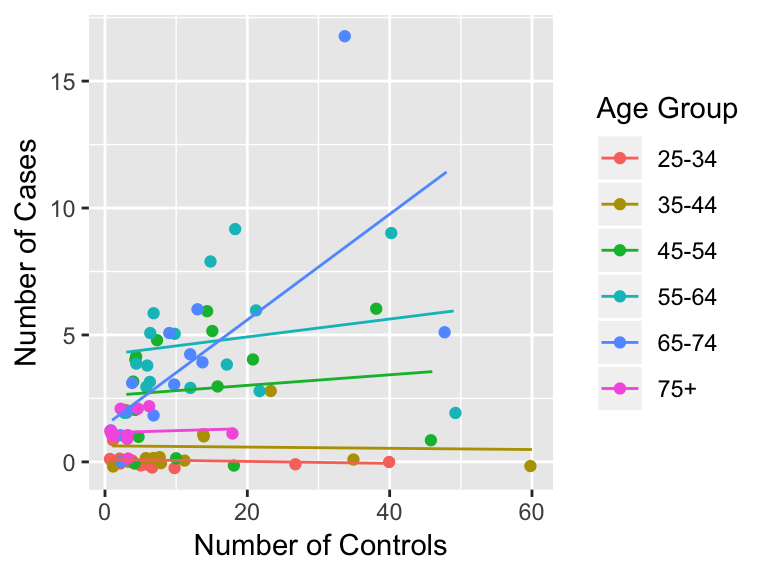
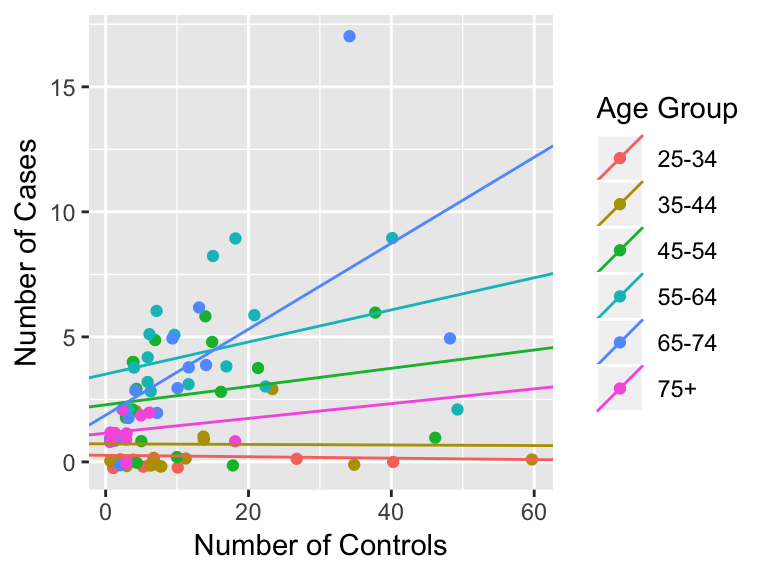
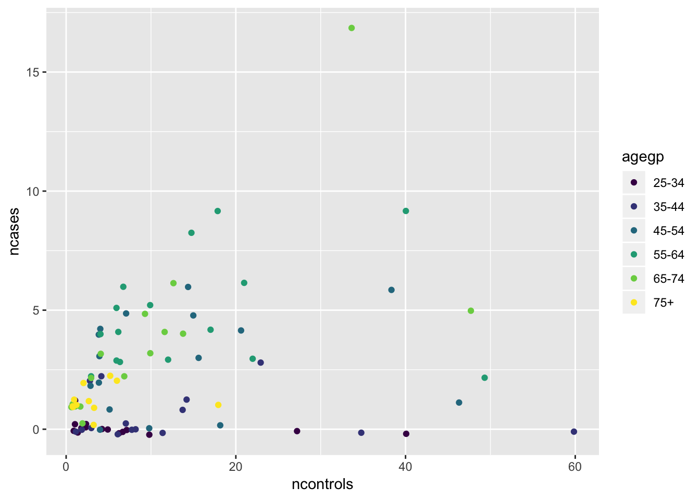
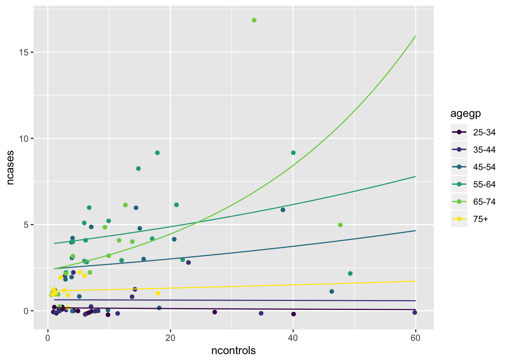
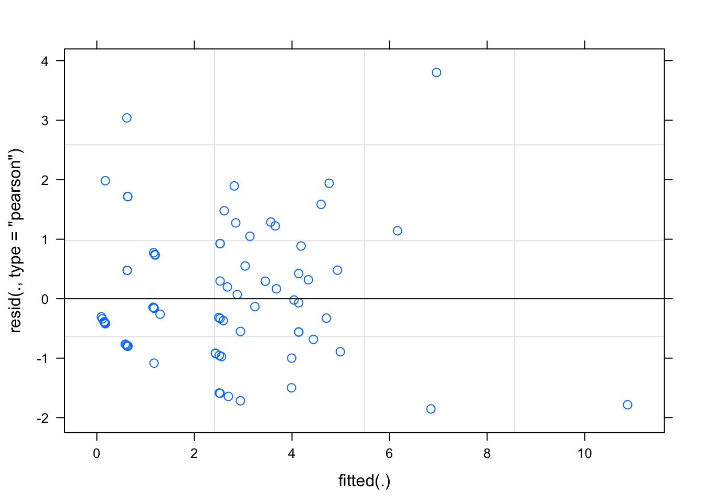

Chapter 23 Regression under many groups: mixed effects models
Caution: in a highly developmental stage! See Section 1.1.
suppressPackageStartupMessages(library(tidyverse))## Warning: package 'ggplot2' was built under R version 3.5.2## Warning: package 'tibble' was built under R version 3.5.2## Warning: package 'purrr' was built under R version 3.5.2## Warning: package 'dplyr' was built under R version 3.5.2## Warning: package 'stringr' was built under R version 3.5.223.1 Motivation for LME
Let’s take a look at the esoph data set, to see how the number of controls ncontrols affects the number of cases ncases of cancer for each age group agegp. Here’s what the data look like (with a tad bit of vertical jitter):

It seems each age group has a different relationship. Should we then fit regression lines for each group separately? Here’s what we get, if we do:

But, each group has so few observations, making the regression less powerful:
## # A tibble: 6 x 2
## agegp n
## <ord> <int>
## 1 25-34 15
## 2 35-44 15
## 3 45-54 16
## 4 55-64 16
## 5 65-74 15
## 6 75+ 11Question: can we borrow information across groups to strengthen regression, while still allowing each group to have its own regression line?
Here’s another scenario: suppose we want to know the effect of ncontrols on the average person. Then, we would only include one common slope parameter for all individuals. Even if each individual “has their own unique slope”, this model is still sensible because the common slope can be interpreted as the average effect. The problem with this model is that the typical estimates of standard error on our regression coefficients will be artificially small due to correlation in the data induced by the grouping.
Here is a simulation that compares the “actual” SE (or at least an approximation of it) and the SE reported by lm:
# library(tidyverse)
# library(broom)
# set.seed(1000)
# ## Number of groups
# g <- 10
# ## Number of observations per group
# ng <- 10
# ## Initiate slope and SE estimates
# beta1hat <- numeric(0)
# se <- numeric(0)
# for (i in 1:1000) {
# ## Generate intercept and slope from a joint Normal distribution
# beta0 <- rnorm(g)
# beta1 <- 1 + beta0 + rnorm(g)
# ## Generate iid data from within each group
# esoph <- tibble(group=LETTERS[1:g], beta0, beta1) %>%
# mutate(x = map(beta0, ~ rnorm(ng))) %>%
# unnest() %>%
# group_by(group) %>%
# mutate(eps = rnorm(length(x)),
# y = beta0 + beta1 * x + eps)
# ## Fit a linear regression, forcing a common slope
# fit <- lm(y ~ x + group, data=esoph) %>%
# tidy()
# beta1hat[i] <- fit$estimate[2]
# se[i] <- fit$std.error[2]
# }
# ## Actual SE:
# sd(beta1hat)
# ## SE given from the lm fit:
# mean(se)
#
# ## Here's a plot of the last sample generated:
# ggplot(esoph, aes(x, y)) +
# geom_point(aes(colour=group), alpha=0.5) +
# theme_bw()Question: How can we account for the dependence in the data?
Both questions can be addressed using a Linear Mixed Effects (LME) model. An LME model is just a linear regression model for each group, with different slopes and intercepts, but the collection of slopes and intercepts is assumed to come from some normal distribution.
23.1.1 Definition
With one predictor (\(X\)), we can write an LME as follows: \[ Y = \left(\beta_0 + b_0\right) + \left(\beta_1 + b_1\right) X + \varepsilon, \] where the error term \(\varepsilon\) has mean zero, and the \(b_0\) and \(b_1\) terms are normally distributed having a mean of zero, and some unknown variances and correlation. The \(\beta\) terms are called the fixed effects, and the \(b\) terms are called the random effects. Since the model has both types of effects, it’s said to be a mixed model – hence the name of “LME”.
Note that we don’t have to make both the slope and intercept random. For example, we can remove the \(b_0\) term, which would mean that each group is forced to have the same (fixed) intercept \(\beta_0\). Also, we can add more predictors (\(X\) variables).
23.1.2 R Tools for Fitting
Two R packages exist for working with mixed effects models: lme4 and nlme. We’ll be using the lme4 package (check out this discussion on Cross Valiesophed for a comparison of the two packages).
Let’s fit the model. We need to indicate a formula first in the lmer function, and indicate the data set we’re using.
fit <- lme4::lmer(ncases ~ ncontrols + (ncontrols | agegp),
data=esoph)Let’s take a closer look at the formula, which in this case is ncases ~ ncontrols + (ncontrols | agegp).
On the left of the ~ is the response variable, as usual (just like for lm). On the right, we need to specify both the fixed and random effects. The fixed effects part is the same as usual: ncontrols indicates the explanatory variables that get a fixed effect. Then, we need to indicate which explanatory variables get a random effect. The random effects can be indicated in parentheses, separated by +, followed by a |, after which the variable(s) that you wish to group by are indicated. So | can be interpreted as “grouped by”.
Now let’s look at the model output:
summary(fit)## Linear mixed model fit by REML ['lmerMod']
## Formula: ncases ~ ncontrols + (ncontrols | agegp)
## Data: esoph
##
## REML criterion at convergence: 388.6
##
## Scaled residuals:
## Min 1Q Median 3Q Max
## -2.6510 -0.3710 -0.1301 0.3683 4.8056
##
## Random effects:
## Groups Name Variance Std.Dev. Corr
## agegp (Intercept) 1.694453 1.30171
## ncontrols 0.005729 0.07569 0.26
## Residual 3.732899 1.93207
## Number of obs: 88, groups: agegp, 6
##
## Fixed effects:
## Estimate Std. Error t value
## (Intercept) 1.63379 0.59994 2.723
## ncontrols 0.04971 0.03676 1.352
##
## Correlation of Fixed Effects:
## (Intr)
## ncontrols 0.038The random and fixed effects are indicated here.
- Under the “Random effects:” section, we have the variance of each random effect, and the lower part of the correlation matrix of these random effects.
- Under the “Fixed effects:” section, we have the estimates of the fixed effects, as well as the uncertainty in the estimate (indicated by the Std. Error).
We can extract the collection of slopes and intercepts for each group using the coef function:
(par_coll <- coef(fit)[[1]])## (Intercept) ncontrols
## 25-34 0.2674067 -0.002914520
## 35-44 0.7227280 -0.001127293
## 45-54 2.2834139 0.036587885
## 55-64 3.5108403 0.064242966
## 65-74 1.8699415 0.171918181
## 75+ 1.1484332 0.029581764Let’s put these regression lines on the plot:
## Warning: Column `agegp` joining character vector and factor, coercing into
## character vector## agegp (Intercept) ncontrols.x alcgp tobgp ncases ncontrols.y
## 1 25-34 0.2674067 -0.002914520 0-39g/day 0-9g/day 0 40
## 2 25-34 0.2674067 -0.002914520 0-39g/day 10-19 0 10
## 3 25-34 0.2674067 -0.002914520 0-39g/day 20-29 0 6
## 4 25-34 0.2674067 -0.002914520 0-39g/day 30+ 0 5
## 5 25-34 0.2674067 -0.002914520 40-79 0-9g/day 0 27
## 6 25-34 0.2674067 -0.002914520 40-79 10-19 0 7
## 7 25-34 0.2674067 -0.002914520 40-79 20-29 0 4
## 8 25-34 0.2674067 -0.002914520 40-79 30+ 0 7
## 9 25-34 0.2674067 -0.002914520 80-119 0-9g/day 0 2
## 10 25-34 0.2674067 -0.002914520 80-119 10-19 0 1
## 11 25-34 0.2674067 -0.002914520 80-119 30+ 0 2
## 12 25-34 0.2674067 -0.002914520 120+ 0-9g/day 0 1
## 13 25-34 0.2674067 -0.002914520 120+ 10-19 1 1
## 14 25-34 0.2674067 -0.002914520 120+ 20-29 0 1
## 15 25-34 0.2674067 -0.002914520 120+ 30+ 0 2
## 16 35-44 0.7227280 -0.001127293 0-39g/day 0-9g/day 0 60
## 17 35-44 0.7227280 -0.001127293 0-39g/day 10-19 1 14
## 18 35-44 0.7227280 -0.001127293 0-39g/day 20-29 0 7
## 19 35-44 0.7227280 -0.001127293 0-39g/day 30+ 0 8
## 20 35-44 0.7227280 -0.001127293 40-79 0-9g/day 0 35
## 21 35-44 0.7227280 -0.001127293 40-79 10-19 3 23
## 22 35-44 0.7227280 -0.001127293 40-79 20-29 1 14
## 23 35-44 0.7227280 -0.001127293 40-79 30+ 0 8
## 24 35-44 0.7227280 -0.001127293 80-119 0-9g/day 0 11
## 25 35-44 0.7227280 -0.001127293 80-119 10-19 0 6
## 26 35-44 0.7227280 -0.001127293 80-119 20-29 0 2
## 27 35-44 0.7227280 -0.001127293 80-119 30+ 0 1
## 28 35-44 0.7227280 -0.001127293 120+ 0-9g/day 2 3
## 29 35-44 0.7227280 -0.001127293 120+ 10-19 0 3
## 30 35-44 0.7227280 -0.001127293 120+ 20-29 2 4
## 31 45-54 2.2834139 0.036587885 0-39g/day 0-9g/day 1 46
## 32 45-54 2.2834139 0.036587885 0-39g/day 10-19 0 18
## 33 45-54 2.2834139 0.036587885 0-39g/day 20-29 0 10
## 34 45-54 2.2834139 0.036587885 0-39g/day 30+ 0 4
## 35 45-54 2.2834139 0.036587885 40-79 0-9g/day 6 38
## 36 45-54 2.2834139 0.036587885 40-79 10-19 4 21
## 37 45-54 2.2834139 0.036587885 40-79 20-29 5 15
## 38 45-54 2.2834139 0.036587885 40-79 30+ 5 7
## 39 45-54 2.2834139 0.036587885 80-119 0-9g/day 3 16
## 40 45-54 2.2834139 0.036587885 80-119 10-19 6 14
## 41 45-54 2.2834139 0.036587885 80-119 20-29 1 5
## 42 45-54 2.2834139 0.036587885 80-119 30+ 2 4
## 43 45-54 2.2834139 0.036587885 120+ 0-9g/day 4 4
## 44 45-54 2.2834139 0.036587885 120+ 10-19 3 4
## 45 45-54 2.2834139 0.036587885 120+ 20-29 2 3
## 46 45-54 2.2834139 0.036587885 120+ 30+ 4 4
## 47 55-64 3.5108403 0.064242966 0-39g/day 0-9g/day 2 49
## 48 55-64 3.5108403 0.064242966 0-39g/day 10-19 3 22
## 49 55-64 3.5108403 0.064242966 0-39g/day 20-29 3 12
## 50 55-64 3.5108403 0.064242966 0-39g/day 30+ 4 6
## 51 55-64 3.5108403 0.064242966 40-79 0-9g/day 9 40
## 52 55-64 3.5108403 0.064242966 40-79 10-19 6 21
## 53 55-64 3.5108403 0.064242966 40-79 20-29 4 17
## 54 55-64 3.5108403 0.064242966 40-79 30+ 3 6
## 55 55-64 3.5108403 0.064242966 80-119 0-9g/day 9 18
## 56 55-64 3.5108403 0.064242966 80-119 10-19 8 15
## 57 55-64 3.5108403 0.064242966 80-119 20-29 3 6
## 58 55-64 3.5108403 0.064242966 80-119 30+ 4 4
## 59 55-64 3.5108403 0.064242966 120+ 0-9g/day 5 10
## 60 55-64 3.5108403 0.064242966 120+ 10-19 6 7
## 61 55-64 3.5108403 0.064242966 120+ 20-29 2 3
## 62 55-64 3.5108403 0.064242966 120+ 30+ 5 6
## 63 65-74 1.8699415 0.171918181 0-39g/day 0-9g/day 5 48
## 64 65-74 1.8699415 0.171918181 0-39g/day 10-19 4 14
## 65 65-74 1.8699415 0.171918181 0-39g/day 20-29 2 7
## 66 65-74 1.8699415 0.171918181 0-39g/day 30+ 0 2
## 67 65-74 1.8699415 0.171918181 40-79 0-9g/day 17 34
## 68 65-74 1.8699415 0.171918181 40-79 10-19 3 10
## 69 65-74 1.8699415 0.171918181 40-79 20-29 5 9
## 70 65-74 1.8699415 0.171918181 80-119 0-9g/day 6 13
## 71 65-74 1.8699415 0.171918181 80-119 10-19 4 12
## 72 65-74 1.8699415 0.171918181 80-119 20-29 2 3
## 73 65-74 1.8699415 0.171918181 80-119 30+ 1 1
## 74 65-74 1.8699415 0.171918181 120+ 0-9g/day 3 4
## 75 65-74 1.8699415 0.171918181 120+ 10-19 1 2
## 76 65-74 1.8699415 0.171918181 120+ 20-29 1 1
## 77 65-74 1.8699415 0.171918181 120+ 30+ 1 1
## 78 75+ 1.1484332 0.029581764 0-39g/day 0-9g/day 1 18
## 79 75+ 1.1484332 0.029581764 0-39g/day 10-19 2 6
## 80 75+ 1.1484332 0.029581764 0-39g/day 30+ 1 3
## 81 75+ 1.1484332 0.029581764 40-79 0-9g/day 2 5
## 82 75+ 1.1484332 0.029581764 40-79 10-19 1 3
## 83 75+ 1.1484332 0.029581764 40-79 20-29 0 3
## 84 75+ 1.1484332 0.029581764 40-79 30+ 1 1
## 85 75+ 1.1484332 0.029581764 80-119 0-9g/day 1 1
## 86 75+ 1.1484332 0.029581764 80-119 10-19 1 1
## 87 75+ 1.1484332 0.029581764 120+ 0-9g/day 2 2
## 88 75+ 1.1484332 0.029581764 120+ 10-19 1 1
So, each group still gets its own regression line, but tying the parameters together with a normal distribution gives us a more powerful regression.
23.2 Mixed Effects Models in R: tutorial
Caution: in a highly developmental stage! See Section 1.1.
Two R packages exist for working with mixed effects models: lme4 and nlme. We’ll be using the lme4 package (check out this discussion on Cross Valiesophed for a comparison of the two packages).
In Lab 1, we compared linear regression (function lm) with GLM’s (function glm). In Lab 2, we consider adding a random effect to either of these:
- A linear model with random effects is a Linear Mixed-Effects Model, and is fit using the
lmerfunction. - A generalized linear model with random effects is a Generalized Linear Mixed-Effects Model, and is fit using the
glmerfunction.
We’ll work with the esoph data set, to see how the number of controls ncontrols affects the number of cases ncases based on age group agegp. Here’s what the data look like (with a tad bit of vertical jitter):
p <- ggplot(esoph, aes(ncontrols, ncases)) +
geom_jitter(aes(colour=agegp), height=0.25)
p
Since the response is a count variable, we’ll go ahead with a Poisson regression – a Generalized Linear Mixed-Effects Model. The model is \[ Y_{ij} \mid X_{ij} = x_{ij} \sim \text{Poisson}\left(\lambda_{ij}\right) \] for each observation \(i\) on the \(j\)’th age group, where \(Y_{ij}\) is the number of cases, \(X_{ij}\) is the number of controls, and \(\lambda_{ij}\) is the conditional mean of \(Y_{ij}.\) We model \(\lambda_{ij}\) as \[ \log\left(\lambda_{ij}\right) = \left(\beta_0 + b_{0j}\right) + \left(\beta_1 + b_{1j}\right) x_{ij}, \] where \(b_{0j}\) and \(b_{1j}\) are joint (bivariate) normally distributed with zero mean.
What does this model mean? First, it means that the mean is exponential in the explanatory variable, since we chose a \(\log\) link function. Second, each age group (\(j\)) gets its own mean curve, via its own linear predictor. But we’re saying that these linear predictors are related: the collection of slopes and intercepts across age groups are centered around \(\beta_0\) and \(\beta_1\) (respectively, called the fixed effects), and the slope and intercept of each age group departs from this center according to some Gaussian random noise (the \(b\) terms, called the random effects).
Let’s fit the model. Then we’ll go through the formula, and the output.
fit <- lme4::glmer(ncases ~ ncontrols + (1 + ncontrols | agegp),
data=esoph,
family=poisson)
summary(fit)## Generalized linear mixed model fit by maximum likelihood (Laplace
## Approximation) [glmerMod]
## Family: poisson ( log )
## Formula: ncases ~ ncontrols + (1 + ncontrols | agegp)
## Data: esoph
##
## AIC BIC logLik deviance df.resid
## 315.1 327.5 -152.5 305.1 83
##
## Scaled residuals:
## Min 1Q Median 3Q Max
## -1.8527 -0.7919 -0.3286 0.4776 3.8037
##
## Random effects:
## Groups Name Variance Std.Dev. Corr
## agegp (Intercept) 1.2343732 1.11102
## ncontrols 0.0003231 0.01797 0.66
## Number of obs: 88, groups: agegp, 6
##
## Fixed effects:
## Estimate Std. Error z value Pr(>|z|)
## (Intercept) 0.135467 0.483821 0.280 0.779
## ncontrols 0.006613 0.013945 0.474 0.635
##
## Correlation of Fixed Effects:
## (Intr)
## ncontrols 0.174To specify the formula, the fixed effects part is the same as usual: ncases ~ ncontrols gives you ncases = beta0 + beta1 * ncontrols. Note that the intercept is put in there by default. Then, we need to indicate which explanatory variables are getting the random effects – including the intercept this time (with a 1), if you want it (in this case, we do). The random effects can be indicated in parentheses, separated by +, followed by a |, after which the variable(s) that you wish to group by are indicated. So | can be interpreted as “grouped by”.
The output of the model fit is similar to what you’ve seen before (in glm for example), but the “random effects” part is new. That gives us the estimates of the joint normal distribution of the random effects – through the variances, and correlation matrix to the right (only the lower-diagonal of the correlation matrix is given, because that matrix is symmetric anyway).
Let’s see what the intercepts and slopes for each age group are, and let’s plot the estimated mean curves:
(coef_fit <- coef(fit)$agegp)## (Intercept) ncontrols
## 25-34 -1.7354568 -0.015913381
## 35-44 -0.4511795 -0.001500806
## 45-54 0.8834953 0.010877993
## 55-64 1.3497975 0.011718494
## 65-74 0.8568544 0.031875270
## 75+ 0.1396592 0.006661840## Colours with stat_function are not nice to deal with. Do manually.
p + stat_function(aes(colour="25-34"), fun = function(x) exp(coef_fit[1,1] + coef_fit[1,2]*x)) +
stat_function(aes(colour="35-44"), fun = function(x) exp(coef_fit[2,1] + coef_fit[2,2]*x)) +
stat_function(aes(colour="45-54"), fun = function(x) exp(coef_fit[3,1] + coef_fit[3,2]*x)) +
stat_function(aes(colour="55-64"), fun = function(x) exp(coef_fit[4,1] + coef_fit[4,2]*x)) +
stat_function(aes(colour="65-74"), fun = function(x) exp(coef_fit[5,1] + coef_fit[5,2]*x)) +
stat_function(aes(colour="75+"), fun = function(x) exp(coef_fit[6,1] + coef_fit[6,2]*x))
A (response-) residual plot is somewhat sensible to look at here:
plot(fit)
Looks fairly centered at zero, so the shape of the mean curves are satisfactory.